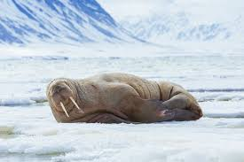
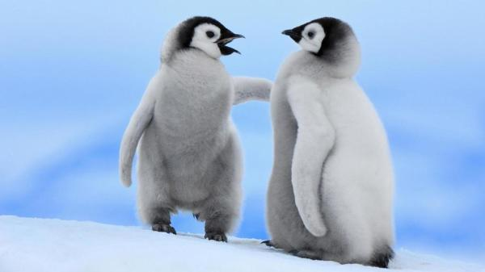

Peek-a-boo is an ancient game riddled in mystery and deceit. Though it appears to be an innocent childrens' pastime, you may change your mind when you learn of its treacherous history.
Let's play peek-a-boo. Click here to see the surprise!
What a cute walrus! Click here to hide her again.
The walrus (Odobenus rosmarus) is a large flippered marine mammal with a discontinuous distribution about the North Pole in the Arctic Ocean and subarctic seas of the Northern Hemisphere. The walrus is the only living species in the family Odobenidae and genus Odobenus. This species is subdivided into three subspecies:[1] the Atlantic walrus (O. r. rosmarus) which lives in the Atlantic Ocean, the Pacific walrus (O. r. divergens) which lives in the Pacific Ocean, and O. r. laptevi, which lives in the Laptev Sea of the Arctic Ocean.
Adult walruses are easily recognized by their prominent tusks, whiskers, and bulkiness. Adult males in the Pacific can weigh more than 2,000 kg (4,400 lb)[3] and, among pinnipeds, are exceeded in size only by the two species of elephant seals.[4] Walruses live mostly in shallow waters above the continental shelves, spending significant amounts of their lives on the sea ice looking for benthic bivalve mollusks to eat. Walruses are relatively long-lived, social animals, and they are considered to be a "keystone species" in the Arctic marine regions.
The walrus has played a prominent role in the cultures of many indigenous Arctic peoples, who have hunted the walrus for its meat, fat, skin, tusks, and bone. During the 19th century and the early 20th century, walruses were widely hunted and killed for their blubber, walrus ivory, and meat. The population of walruses dropped rapidly all around the Arctic region. Their population has rebounded somewhat since then, though the populations of Atlantic and Laptev walruses remain fragmented and at low levels compared with the time before human interference.
Let's play again! Click here to see the surprise!
What cute penguins! Click here to hide them again.
Penguins (order Sphenisciformes, family Spheniscidae) are a group of aquatic, flightless birds living almost exclusively in the Southern Hemisphere, especially in Antarctica. Highly adapted for life in the water, penguins have countershaded dark and white plumage, and their wings have evolved into flippers. Most penguins feed on krill, fish, squid and other forms of sealife caught while swimming underwater. They spend about half of their lives on land and half in the oceans.
Although all penguin species are native to the Southern Hemisphere, they are not found only in cold climates, such as Antarctica. In fact, only a few species of penguin live so far south. Several species are found in the temperate zone, and one species, the Galápagos penguin, lives near the equator.
The largest living species is the emperor penguin (Aptenodytes forsteri): on average adults are about 1.1 m (3 ft 7 in) tall and weigh 35 kg (77 lb) or more. The smallest penguin species is the little blue penguin (Eudyptula minor), also known as the fairy penguin, which stands around 40 cm (16 in) tall and weighs 1 kg (2.2 lb). Among extant penguins, larger penguins inhabit colder regions, while smaller penguins are generally found in temperate or even tropical climates (see also Bergmann's rule). Some prehistoric species attained enormous sizes, becoming as tall or as heavy as an adult human. These were not restricted to Antarctic regions; on the contrary, subantarctic regions harboured high diversity, and at least one giant penguin occurred in a region not quite 2,000 km south of the equator 35 mya, in a climate decidedly warmer than today.